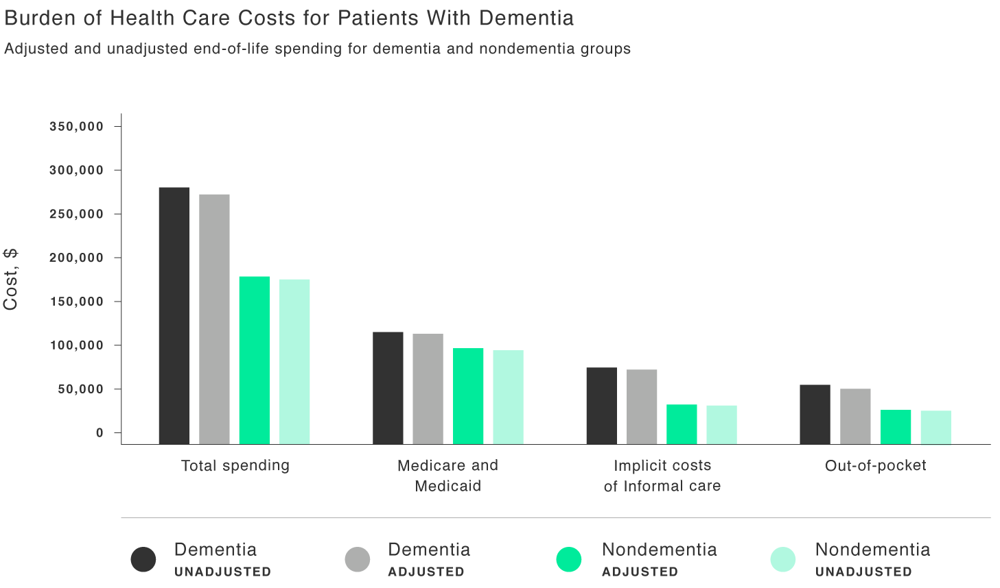
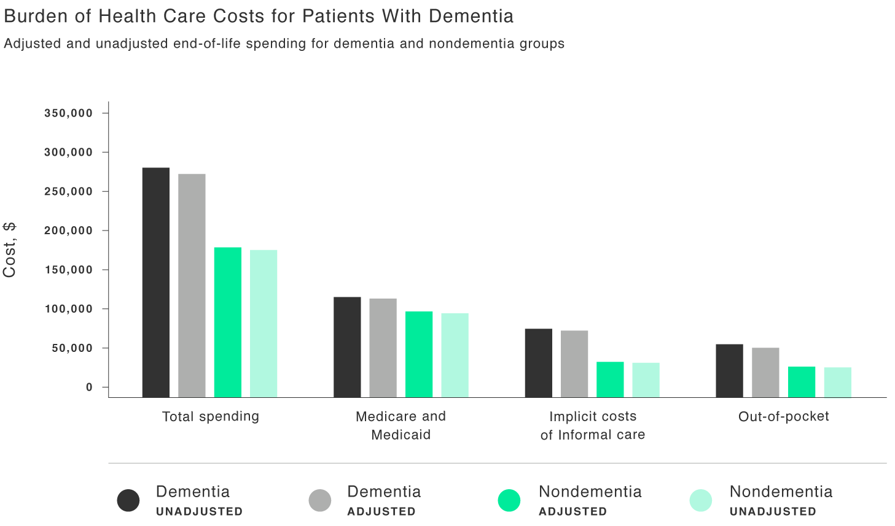
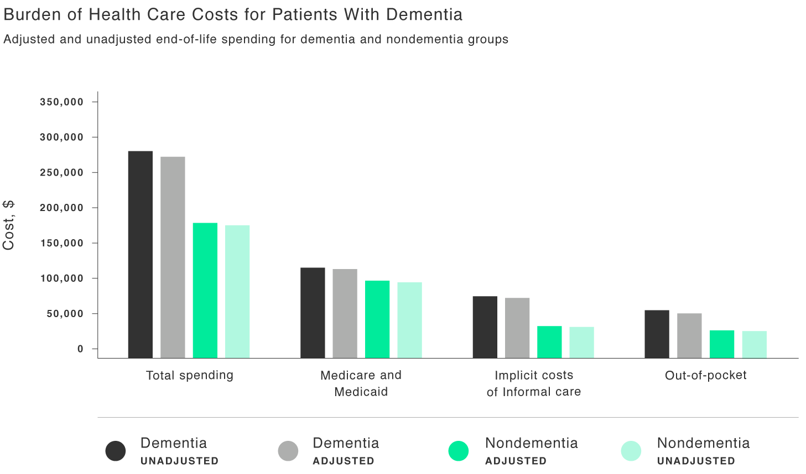

James O. Freedman Presidential Professor of Economics: Economics Department 6106 Rockefeller Hall Dartmouth College Hanover, NH 03755-3514
Professor of Community and Family Medicine: The Dartmouth Institute for Health Policy & Clinical Practice Geisel School of Medicine Hanover, NH 03755
